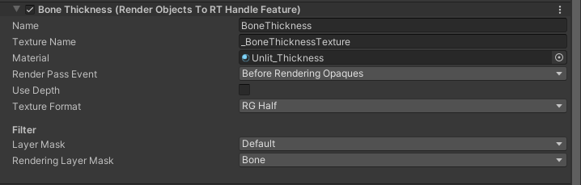
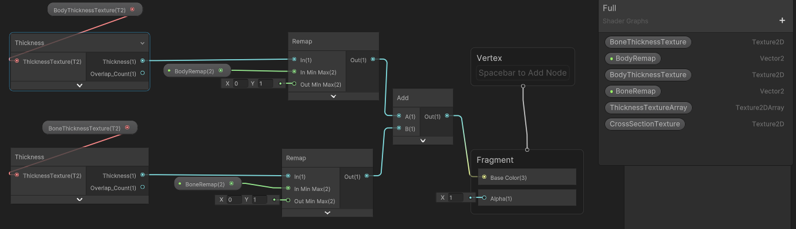
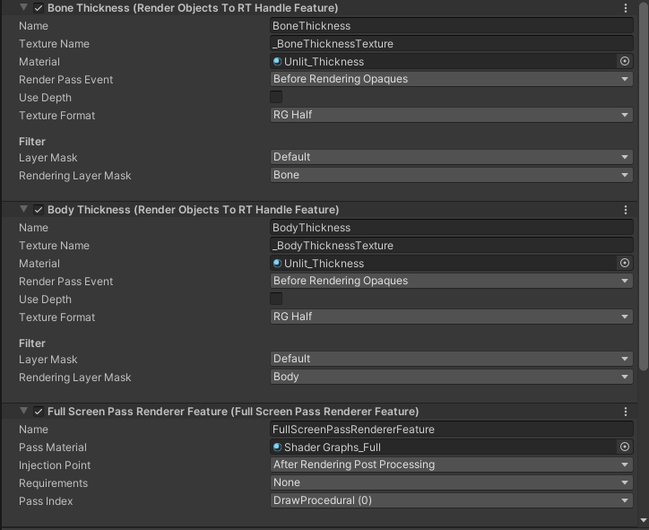
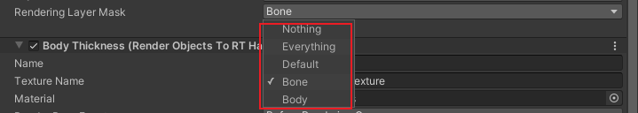

URP下厚度图的实现
屏幕空间厚度
总有一些时候需要获取特定模型的屏幕空间厚度，如次表面散射，透明渲染，或者最近项目中要求实现的X光效果。
Unity在2023.1的HDRP中提供了这一功能，经询问，URP暂无此计划。
翻阅HDRP的实现源码后才发现这个效果并没有那么复杂，性能损耗也没有想象中那么大，实现的方式很巧妙，遂决定在URP中复刻一下。
HDRP中的实现
最关键的代码是一个Shader：ComputeThickness，贴一下关键代码：
ZWrite Off
ZTest Always
Cull Off
Blend One One
BlendOp Add
HLSLPROGRAM
float _DownsizeScale;
uint _ViewId;
void Frag(PackedVaryingsToPS packedInput, bool isFrontFace : SV_IsFrontFace, out float2 outColor : SV_Target0 )
{
UNITY_SETUP_STEREO_EYE_INDEX_POST_VERTEX(packedInput);
FragInputs input = UnpackVaryingsToFragInputs(packedInput);
float usedDepth = LinearEyeDepth(input.positionSS.z, _ZBufferParams);
float sign = isFrontFace ? -1.0f : 1.0f;
float value = sign * usedDepth;
outColor = float2(value, 1.0f);
}
这里巧妙的利用了BlendOp
Add，不剔除背面，每个三角面的点都参与计算，如果是背面，就记为正，写入其深度。
如果是正面，就记为负数，减去其深度，这样无论模型有多复杂，只要是封闭的模型（不封闭的模型何来厚度一说），都可以像素级别的计算其准确的厚度。
第二个通道则是都记为1，无论正负都加1，目的是来计算屏幕空间的面片数量，对与非封闭模型，如树叶植被有很大帮助。
URP中的实现
知道其原理就开始着手在URP中实现吧。
思路
分为两个RenderFeature，一个用来绘制物体的厚度到厚度图，再一个全屏pass，用来绘制到屏幕上。
实现
首先还是新建两个类，一个Feature一个Pass
为了之后的通用性，设计成RenderObjectsToRTHandleFeature，即使用设定的Material，把指定层级或渲染层的物体绘制到一张临时RT上。
public class RenderObjectsToRTHandleFeature : ScriptableRendererFeature
{
public string textureName = "_CustomTexture";
public Material material;
public RenderPassEvent renderPassEvent = RenderPassEvent.BeforeRenderingOpaques;
public bool useDepth;
public RenderTextureFormat textureFormat;
[Header("Filter")]
public LayerMask layerMask;
public RenderingLayerMask renderingLayerMask;
// todo 做成列表的形式，用TextureArray来实现，问题是在XR中如何获取
// public List<RenderingLayerMask> layerMaskList;
RenderObjectsToRTHandlePass renderObjectsToRTHandlePass;
public override void Create()
{
renderObjectsToRTHandlePass = new RenderObjectsToRTHandlePass(name, layerMask, renderingLayerMask, textureName, useDepth,textureFormat)
{
renderPassEvent = renderPassEvent
};
}
public override void AddRenderPasses(ScriptableRenderer renderer, ref RenderingData renderingData)
{
// if (material == null)
// {
// Debug.Log("material is null. RenderObjectsToRTHandle pass will not execute.");
// return;
// }
renderObjectsToRTHandlePass.Setup(material);
renderer.EnqueuePass(renderObjectsToRTHandlePass);
}
protected override void Dispose(bool disposing)
{
base.Dispose(disposing);
renderObjectsToRTHandlePass?.Dispose();
renderObjectsToRTHandlePass = null;
}
}这里主要设定了临时RT的名称，材质，RednerPass的插入时间，是否使用深度，RT的格式，以及要绘制的物体的层和渲染层。
对应到要绘制深度图的话，那就是如下的设置

然后具体看看Pass的实现
using System.Collections.Generic;
using UnityEngine;
using UnityEngine.Rendering;
using UnityEngine.Rendering.Universal;
public class RenderObjectsToRTHandlePass : ScriptableRenderPass
{
private Material m_thicknessMaterial;
private FilteringSettings m_filteringSettings;
private readonly ProfilingSampler m_ProfilingSampler;
readonly List<ShaderTagId> m_ShaderTagIdList = new();
private readonly string k_TextureName;
private RTHandle m_ColorTexture;
private RTHandle m_DepthTexture;
private bool m_UseDepth;
private RenderTextureFormat m_RenderTextureFormat;
public RenderObjectsToRTHandlePass(string profilerTag, LayerMask layerMask, RenderingLayerMask renderingLayerMask,
string textName, bool useDepth, RenderTextureFormat renderTextureFormat)
{
profilingSampler = new ProfilingSampler(nameof(RenderObjectsToRTHandlePass));
m_ProfilingSampler = new ProfilingSampler(profilerTag);
m_UseDepth = useDepth;
m_RenderTextureFormat = renderTextureFormat;
m_filteringSettings = new FilteringSettings(RenderQueueRange.opaque, layerMask.value, renderingLayerMask.Value);
m_ShaderTagIdList.Add(new ShaderTagId("SRPDefaultUnlit"));
m_ShaderTagIdList.Add(new ShaderTagId("UniversalForward"));
m_ShaderTagIdList.Add(new ShaderTagId("UniversalForwardOnly"));
k_TextureName = textName;
}
public void Setup(Material thicknessMaterial)
{
m_thicknessMaterial = thicknessMaterial;
}
public override void OnCameraSetup(CommandBuffer cmd, ref RenderingData renderingData)
{
RenderTextureDescriptor cameraTargetDescriptor = renderingData.cameraData.cameraTargetDescriptor;
RenderTextureDescriptor thicknessDesc = cameraTargetDescriptor;
thicknessDesc.msaaSamples = 1;
thicknessDesc.depthBufferBits = 0;
thicknessDesc.colorFormat = m_RenderTextureFormat;
RenderingUtils.ReAllocateIfNeeded(ref m_ColorTexture, thicknessDesc, FilterMode.Bilinear,
TextureWrapMode.Clamp, name: k_TextureName);
if (m_UseDepth)
{
var depthDesc = renderingData.cameraData.cameraTargetDescriptor;
depthDesc.depthBufferBits = 32; // should be default anyway
RenderingUtils.ReAllocateIfNeeded(ref m_DepthTexture, depthDesc, name: k_TextureName + "Depth");
ConfigureTarget(m_ColorTexture, m_DepthTexture);
}
else
{
ConfigureTarget(m_ColorTexture);
}
if (m_UseDepth)
{
ConfigureClear(ClearFlag.All, Color.black);
}
else
ConfigureClear(ClearFlag.Color, Color.black);
}
public override void Execute(ScriptableRenderContext context, ref RenderingData renderingData)
{
SortingCriteria sortingCriteria = renderingData.cameraData.defaultOpaqueSortFlags;
DrawingSettings drawingSettings = CreateDrawingSettings(m_ShaderTagIdList, ref renderingData, sortingCriteria);
if (m_thicknessMaterial != null)
{
drawingSettings.overrideMaterial = m_thicknessMaterial;
drawingSettings.overrideMaterialPassIndex = 0;
}
var cmd = CommandBufferPool.Get();
using (new ProfilingScope(cmd, m_ProfilingSampler))
{
context.ExecuteCommandBuffer(cmd);
cmd.Clear();
// context.SetupCameraProperties(renderingData.cameraData.camera);
context.DrawRenderers(renderingData.cullResults, ref drawingSettings, ref m_filteringSettings);
cmd.SetGlobalTexture(k_TextureName, m_ColorTexture);
// cmd.SetGlobalTexture("_ThicknessTextureArray", m_ThicknessTexture);
}
context.ExecuteCommandBuffer(cmd);
cmd.Clear();
CommandBufferPool.Release(cmd);
}
public void Dispose()
{
m_ColorTexture?.Release();
}
public override void OnCameraCleanup(CommandBuffer cmd)
{
}
}
总之就是沿用Feature的参数，申请各种RT，然后配置各种渲染参数，最终绘制到指定的RT上。
shader
最后就是看看Shader吧。
Shader "Unlit/Thickness"
{
Properties
{
}
SubShader
{
Tags
{
"RenderType" = "Opaque" "RenderPipeline" = "UniversalPipeline"
}
Pass
{
Name "ComputeThickness"
Tags
{
"LightMode" = "Forward"
}
ZWrite Off
ZTest Always
Cull Off
Blend One One
BlendOp Add
HLSLPROGRAM
#pragma vertex vert
#pragma fragment frag
#include "Packages/com.unity.render-pipelines.universal/ShaderLibrary/Core.hlsl"
struct Attributes
{
float4 positionOS : POSITION;
UNITY_VERTEX_INPUT_INSTANCE_ID
};
struct Varyings
{
float4 positionHCS : SV_POSITION;
UNITY_VERTEX_OUTPUT_STEREO
};
Varyings vert(Attributes IN)
{
Varyings OUT;
UNITY_SETUP_INSTANCE_ID(IN);
UNITY_INITIALIZE_VERTEX_OUTPUT_STEREO(OUT);
OUT.positionHCS = TransformObjectToHClip(IN.positionOS.xyz);
return OUT;
}
float2 frag(Varyings IN, bool isFrontFace : SV_IsFrontFace) : SV_Target
{
UNITY_SETUP_STEREO_EYE_INDEX_POST_VERTEX(IN);
float usedDepth = LinearEyeDepth(IN.positionHCS.z, _ZBufferParams);
float sign = isFrontFace ? -1.0f : 1.0f;
float value = sign * usedDepth;
float2 color = float2(value, 1);
return color;
}
ENDHLSL
}
}
}
和hdrp的实现基本一致，增加了一些URP要求的配置而已。
全屏绘制
这里就用ShaderGraph来绘制吧

可以同时启用多个厚度图Feature，每个都绘制到不同的RT上，然后在SG中根据权重来混合。
比如这里就根据骨骼和身体的不同厚度，来赋予不同的权重，就可以得到X射线的效果。

如果想更细致一点，还可以用身体厚度减去骨骼。
RenderingLayerMask
Unity并未对RenderingLayerMask提供对应的在Inspector中方便可用的下拉列表实现，这次就顺便实现一个。
首先定义下结构体
[System.Serializable]
public struct RenderingLayerMask
{
[SerializeField]
private uint m_Mask;
public static implicit operator uint(RenderingLayerMask mask) => mask.m_Mask;
public static implicit operator RenderingLayerMask(uint uintVal)
{
RenderingLayerMask renderingLayerMask;
renderingLayerMask.m_Mask = uintVal;
return renderingLayerMask;
}
public uint Value
{
get => this.m_Mask;
set => this.m_Mask = value;
}
}
然后是对应的PropertyDrawer
[CustomPropertyDrawer(typeof(RenderingLayerMask))]
public class RenderingLayerMaskDrawer : PropertyDrawer
{
public override void OnGUI(Rect position, SerializedProperty property, GUIContent label)
{
EditorGUI.BeginProperty(position, label, property);
position = EditorGUI.PrefixLabel(position, GUIUtility.GetControlID(FocusType.Passive), label);
var indent = EditorGUI.indentLevel;
EditorGUI.indentLevel = 0;
var amountRect = new Rect(position.x, position.y, position.width, position.height);
var mask = property.FindPropertyRelative("m_Mask");
var selected = (int)mask.uintValue;
var options = GraphicsSettings.defaultRenderPipeline.renderingLayerMaskNames;
selected = EditorGUI.MaskField(amountRect, selected, options);
mask.uintValue = (uint)selected;
EditorGUI.indentLevel = indent;
EditorGUI.EndProperty();
}
}
大体思路是通过GraphicsSettings.defaultRenderPipeline.renderingLayerMaskNames;来获取全部maskname，然后利用EditorGUI.MaskField来选择。
